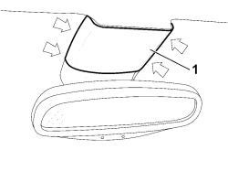
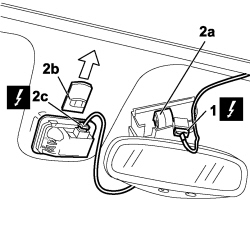

7065C59 INTERIOR REAR VIEW MIRROR WITH AUTOMATIC ANTIGLARE DEVICE - R R
- Path
- Procedures > 70 FITTINGS > 7065 SAFETY BELTS AND ACCESSORIES > 7065C ACCESSORIES AND DECORATIONS > 7065C59 INTERIOR REAR VIEW MIRROR WITH AUTOMATIC ANTIGLARE DEVICE - R R
- Kind
- repair procedure (removal / refitting; the operation number is the code)
- Applies to
- all engines; all production periods
- Interactive page
- https://sloeber94.github.io/elrnDB-fCrm/en/#/194001953
Applies to: all engines; all production periods
 Removing
Removing
 Refitting
Refitting- Disconnect the negative battery terminal.
Description | Connector | |
|---|---|---|
BATTERY |
1. Remove the panel, releasing the internal retainers indicated.

Applies to: all engines; all production periods
1. Disconnect the electrical connection.
2. Prise the rear view mirror (2a) off plate (2b) in the arrowed direction, disconnecting electrical connection (2a) and remove the mirror.
Description | Connector | |
|---|---|---|
1 | ELECTRO-CHROME INTERIOR REAR VIEW MIRROR |

Applies to: all engines; all production periods
Refitting
Removing- Check that the rear view mirror is not damaged.
- Connect the electrical connections.
Description | Connector | |
|---|---|---|
ELECTRO-CHROME INTERIOR REAR VIEW MIRROR |
- Fit the rear view mirror on the plate secured to the glass.
- Connect the negative battery terminal.
Description | Connector | |
|---|---|---|
BATTERY |